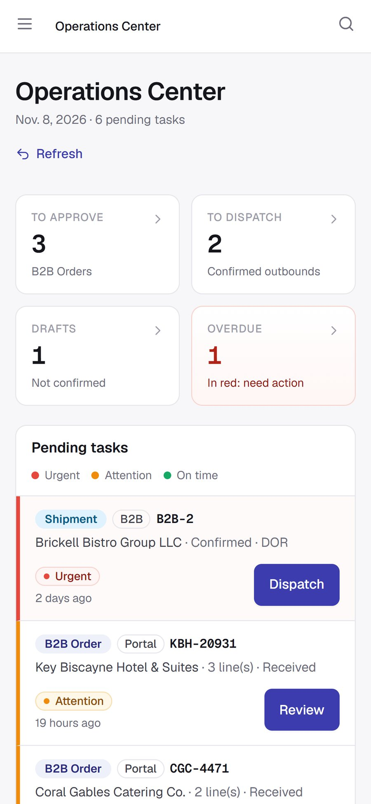
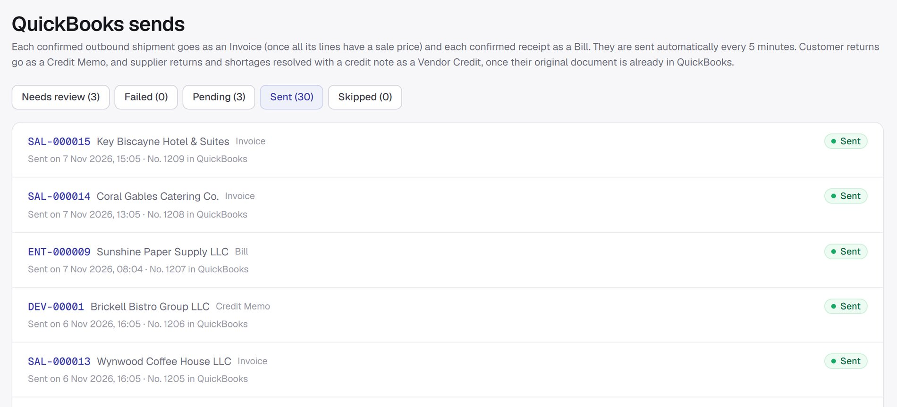
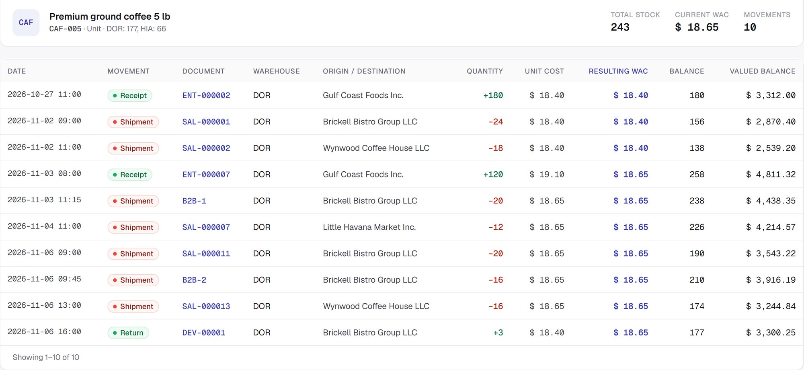
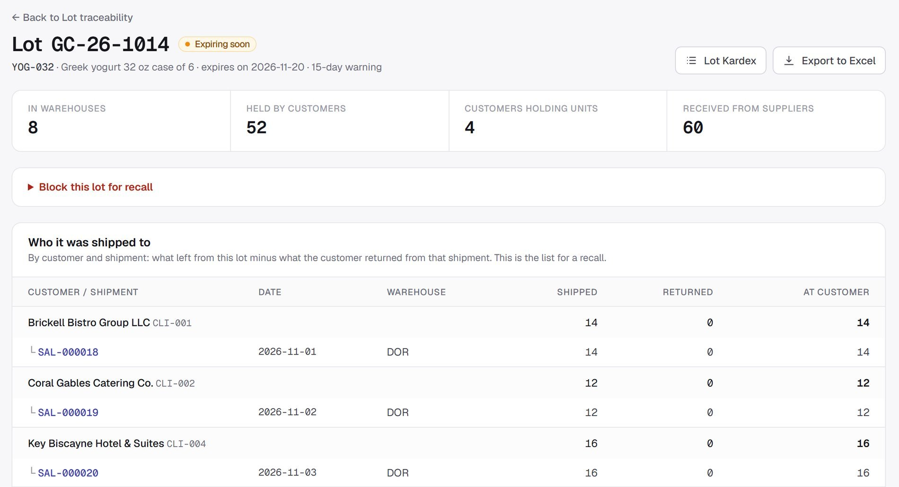
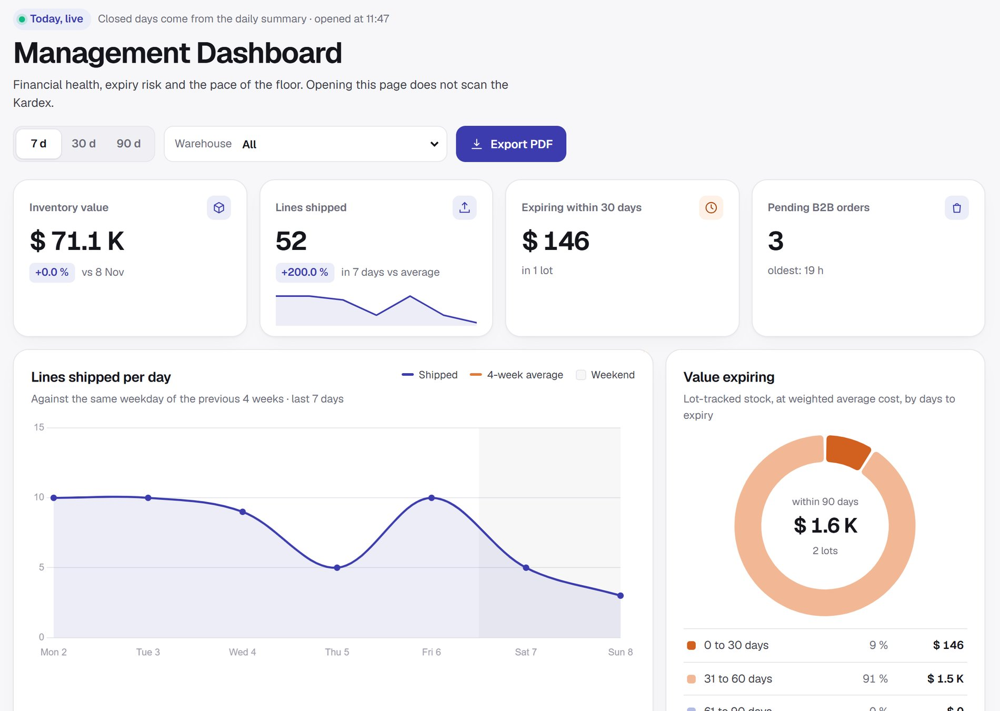
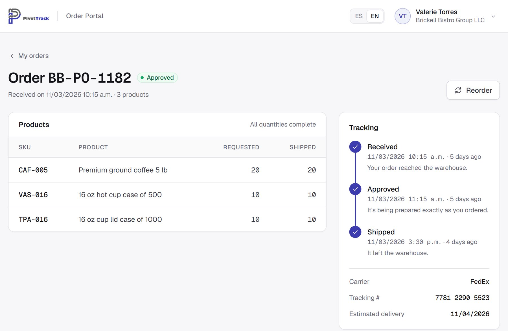

Sepa en minutos qué cliente recibió cada lote.Know in minutes which customer got every lot.
PivetTrack sigue cada caja desde su muelle hasta su cliente. Abajo está el recorrido completo de un lote de yogur, con pantallas reales del sistema.
PivetTrack follows every case from your dock to your customer. Below is the full journey of one lot of yogurt, with real screens from the system.
El recorrido de un loteThe journey of a lot
-
Llega al muelleIt reaches the dock
La oficina carga la factura y el piso declara lotes, vencimientos y cantidades sin ver lo esperado. Si facturaron 120 cajas y se contaron 114, la diferencia la verifica otro administrador y se cierra con nota de crédito, reposición o baja.
The office enters the invoice and the floor declares lots, expirations and quantities without seeing what was expected. If 120 cases were invoiced and 114 counted, another administrator verifies the difference and closes it with a credit, a replacement or a write-off.
-
Se guarda en su pasilloIt goes to its aisle
Al recibir, cada cosa se guarda en su pasillo. El stock se ve por ubicación, cada reubicación deja su movimiento y cada pasillo se recuenta a ciegas.
On receiving, everything is put away to its aisle. Stock is tracked by location, every move leaves a record and each aisle can be blind-recounted.
-
Sale primero lo que vence primeroThe earliest-expiring lot ships first
El operario escanea el producto o su caja (EAN, UPC o ITF) con el celular o una pistola. Un despacho a cliente nunca toma un lote vencido, y saltear el escaneo exige la co-firma de un administrador.
The picker scans the item or its case (EAN, UPC or ITF) with a phone or a handheld scanner. A customer shipment never takes an expired lot, and skipping the scan requires an administrator’s co-signature.


-
Llega solo a su QuickBooksIt lands in your QuickBooks on its own
Cada salida se convierte en Invoice, cada entrada en Bill, cada devolución de cliente en Credit Memo y cada devolución a proveedor en Vendor Credit. La cuenta sigue siendo suya y la administra su contador.
Every shipment becomes an Invoice, every receipt a Bill, every customer return a Credit Memo and every supplier return a Vendor Credit. The account stays yours, managed by your accountant.


-
Si vuelve, vuelve a su costoIf it comes back, it comes back at its cost
Tiene 200 unidades a un costo promedio de $12.00 y un cliente devuelve 100 que salieron a $10.00. Reingresar al costo del día le dejaría $200 de inventario fantasma. PivetTrack reingresa a $10.00: 300 unidades, $3,400, costo promedio de $11.33.
You hold 200 units at an average cost of $12.00 and a customer returns 100 that shipped at $10.00. Restocking at today’s cost would leave $200 of phantom inventory. PivetTrack restocks at $10.00: 300 units, $3,400, average cost of $11.33.


-
Y si hay un retiro, ya sabe a quién llamarAnd if there’s a recall, you know who to call
Un clic y tiene la lista de clientes que recibieron el lote, salida por salida y neta de devoluciones, lista para Excel.
One click and you have the list of customers who received the lot, shipment by shipment and net of returns, ready for Excel.
PivetTrack registra la trazabilidad con los datos que carga su equipo y apoya sus procesos de retiro. No sustituye sus obligaciones ante la FDA ni otras normas sanitarias.
PivetTrack records traceability from the data your team enters and supports your recall processes. It does not replace your obligations to the FDA or under other health regulations.


Decida con los números de hoy.Decide with today’s numbers.
Valor del inventario, ritmo de despacho, vencimientos y pedidos pendientes, en un panel y en un informe PDF con folio de auditoría: queda registrado quién lo emitió, cuándo y con qué filtros.
Inventory value, shipping pace, expirations and pending orders, on a dashboard and in a PDF report with an audit number: it records who issued it, when and with which filters.




Sus clientes piden en su portal, con su logo.Your customers order in your portal, under your logo.
Restaurantes, hoteles y mercados piden desde el teléfono, con los productos que usted les habilita. También hay una API para conectar otros sistemas. El alcance del portal y de la API se define en la propuesta formal.
Restaurants, hotels and markets order from their phones, with the products you enable for them. There’s also an API to connect other systems. The scope of the portal and the API is set in the formal proposal.
Cualquier proveedor dice que su sistema es rápido. Aquí está la medición.Every vendor says their system is fast. Here’s the measurement.
| PruebaTest | ResultadoResult | FechaDate |
|---|---|---|
| 120 operarios haciendo picking a la vez durante 15 minutos, con más de 300,000 salidas en el historial. 4,243 de 4,243 salidas confirmadas y ningún error de servidor en 46,904 peticiones.120 operators picking at once for 15 minutes, with more than 300,000 shipments in the history. 4,243 of 4,243 shipments confirmed and zero server errors in 46,904 requests. | 293 ms p95: 95 de cada 100 respuestas, o menosp95: 95 of every 100 responses, or faster |
3 nov 2026Nov 3, 2026 |
| 240 operarios, el techo de un despliegue estándar y ya con cola. Sin errores. Entre 120 y 240 los tiempos varían de una corrida a otra, y por eso no los garantizamos.240 operators, the ceiling of a standard deployment and already queuing. Error-free. Between 120 and 240, times vary from run to run, which is why we don’t guarantee them. | 1.56 s p95 |
1 nov 2026Nov 1, 2026 |
| Cierre de una toma general de 167,382 líneas mientras 20 operarios seguían despachando. Ni un pedido falló de 6,176.Closing a 167,382-line full count while 20 operators kept shipping. Not one of 6,176 requests failed. | 229 s En un solo intentoIn a single attempt |
29 oct 2026Oct 29, 2026 |
Corridas únicas en un entorno de pruebas clonado de producción, sin usuarios reales. Es un rango, no una cifra fija: el peor minuto de la corrida del 3 de noviembre llegó a 636 ms. Por contrato: hasta 120 usuarios simultáneos y p95 de hasta 0.5 s en picking, con condiciones.
Single runs in a production-identical staging environment, with no real users. It is a range, not a fixed figure: the worst minute of the Nov. 3 run reached 636 ms. By contract: up to 120 simultaneous users and a p95 of up to 0.5 s in picking, with conditions.
Véalo funcionandoSee it working
Una instancia exclusiva para su empresa.A dedicated instance for your company.
PivetTrack es single-tenant: una aplicación y una base de datos solo para usted. Sus datos no conviven con los de nadie y su rendimiento no depende del vecino.
PivetTrack is single-tenant: an application and a database just for you. Your data is never stored alongside anyone else’s and your performance never depends on a neighbor.
Registros que no se reescribenRecords that can’t be rewritten
Nadie, en ningún rol, puede editar o borrar un movimiento del Kardex.
No one, in any role, can edit or delete a stock ledger entry.
Doble factor (2FA)Two-factor authentication
Obligatorio para los administradores, con códigos de respaldo.
Required for administrators, with backup codes.
Auditoría completaFull audit trail
Quién hizo qué y cuándo: cada documento, cada cambio de costo y cada informe.
Who did what and when: every document, cost change and report.
Respaldos gestionadosManaged backups
PostgreSQL administrado, con respaldo automático diario y restauración.
Managed PostgreSQL with automated daily backups and restore.
99.9% de disponibilidad99.9% uptime
Por contrato (SLA), con créditos de servicio a su favor si no se cumple.
In the contract (SLA), with service credits in your favor if we miss it.
Dos números. Todo sobre la mesa.Two numbers. All on the table.
Tenga 8 o 25 usuarios, 5,000 o 150,000 SKU. Sin licencias por usuario, sin servidores que comprar y sin cargos sorpresa.
8 or 25 users, 5,000 or 150,000 SKUs. No per-user licenses, no servers to buy and no surprise charges.
Implementación, pago únicoImplementation, one-time
- En marcha en 2 a 3 semanas
- Instancia dedicada y aislada en la nube
- Su logo y su marca en la interfaz y en todos los comprobantes PDF
- Carga asistida de su catálogo desde Excel o su ERP, sin tope de SKU
- Dos capacitaciones virtuales de 2 horas
- Configuración de QuickBooks Online con su contador
- Live in 2 to 3 weeks
- A dedicated, isolated cloud instance
- Your logo and brand on the interface and every PDF document
- Assisted load of your catalog from Excel or your ERP, no SKU cap
- Two 2-hour virtual training sessions
- QuickBooks Online setup with your accountant
Plan EstándarStandard Plan
- Usuarios ilimitados, sin cargo por asiento
- Todos los módulos del depósito, con lotes, FEFO y retiros
- Importaciones y cierres masivos en segundo plano, sin tope de SKU
- Hasta 120 usuarios simultáneos; p95 de hasta 0.5 s en picking, con condiciones (SOW, Anexo C)
- Soporte según el SLA, con atención 24/7 para incidentes críticos
- Respaldos automáticos y actualizaciones
- QuickBooks Online, operado por nosotros
- Unlimited users, no per-seat fees
- Every warehouse module, with lots, FEFO and recall
- Bulk imports and closes in the background, no SKU cap
- Up to 120 simultaneous users; p95 of up to 0.5 s in picking, with conditions (SOW, Exhibit C)
- Support per the SLA, with 24/7 response to critical incidents
- Automated backups and updates
- QuickBooks Online, run by us
| CríticoCritical | 1 hora, 24/71 hour, 24/7 | Caída total o pérdida de datosFull outage or data loss |
|---|---|---|
| AltoHigh | 4 horas hábiles4 business hours | Función esencial caída, sin alternativaEssential function down, no workaround |
| MedioMedium | 1 día hábil1 business day | Un error con alternativa disponibleAn error with a workaround |
| BajoLow | 2 días hábiles2 business days | Consultas y solicitudes de mejoraQuestions and feature requests |
Se cotiza aparte: Portal B2B y API, desarrollos a medida, integraciones con otros sistemas (QuickBooks Desktop u otro ERP), una segunda fuente de datos y la depuración de sus datos. Plan Enterprise: para varios procesos masivos a la vez o informes pesados de forma rutinaria; se implementa y se cotiza a medida. Precios en dólares, sin impuestos. A octubre de 2026, la suscripción no está gravada con el Sales Tax de Florida. Las condiciones finales se fijan en el SOW y el SLA.
Quoted separately: B2B Portal and API, custom development, integrations with other systems (QuickBooks Desktop or another ERP), a second data source and data cleansing. Enterprise Plan: for several bulk jobs at once or routinely heavy reports; built and quoted to order. Prices in U.S. dollars, before taxes. As of October 2026, the subscription is not subject to Florida sales tax. Final terms are set in the SOW and SLA.
La pregunta no es si puede permitirse cambiar. Es cuánto le cuesta cada día que no lo hace.The question isn’t whether you can afford to switch. It’s what every day without switching is costing you.
Sesión de diagnósticoDiagnostic session
45 minutos sobre su operación real, con acuerdo de confidencialidad. Le mostramos con números dónde pierde dinero hoy.
45 minutes on your real operation, under an NDA. We show you, in numbers, where you lose money today.
Propuesta formalFormal proposal
Alcance de Trabajo (SOW) y Acuerdo de Nivel de Servicio (SLA), por escrito y antes de empezar.
Statement of Work (SOW) and Service Level Agreement (SLA), in writing before we start.
En marcha con su marcaLive under your brand
En 2 a 3 semanas: su catálogo cargado, con el costo de cada producto, y su equipo capacitado.
In 2 to 3 weeks: your catalog loaded with each product’s starting cost, and your team trained.